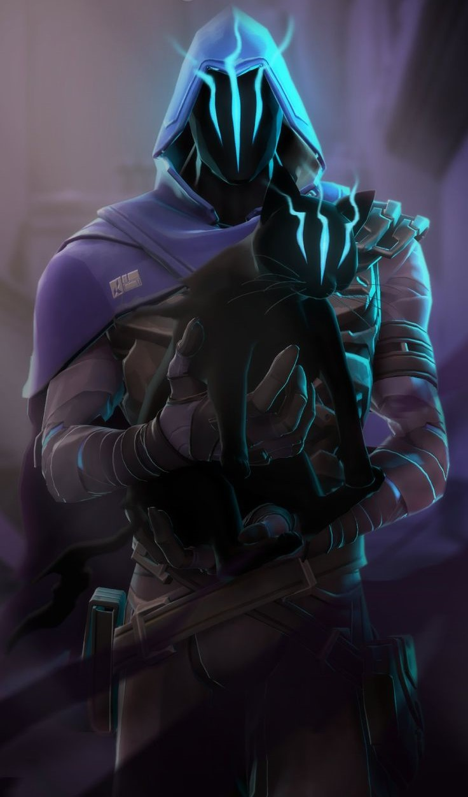

Yetenekler

Gizli Adım (C):
Kısa bir mesafeye ışınlanır.

Paranoya (Q):
Duvarlardan geçebilen, dokunduğu herkesin görüşünü önemli ölçüde kısıtlayan ve sağır eden bir gölge yollar.
Karanlık Örtü (E):
Uzun menzilli, içi boş ve uzun süreli bir gölge küresi fırlatarak görüşü engeller.

Gölgelerin İçinden (X):
Haritada istediği bir noktaya ışınlanır. Işınlanma sırasında mini haritayı bozar ve gölge formunda yok edilebilir.